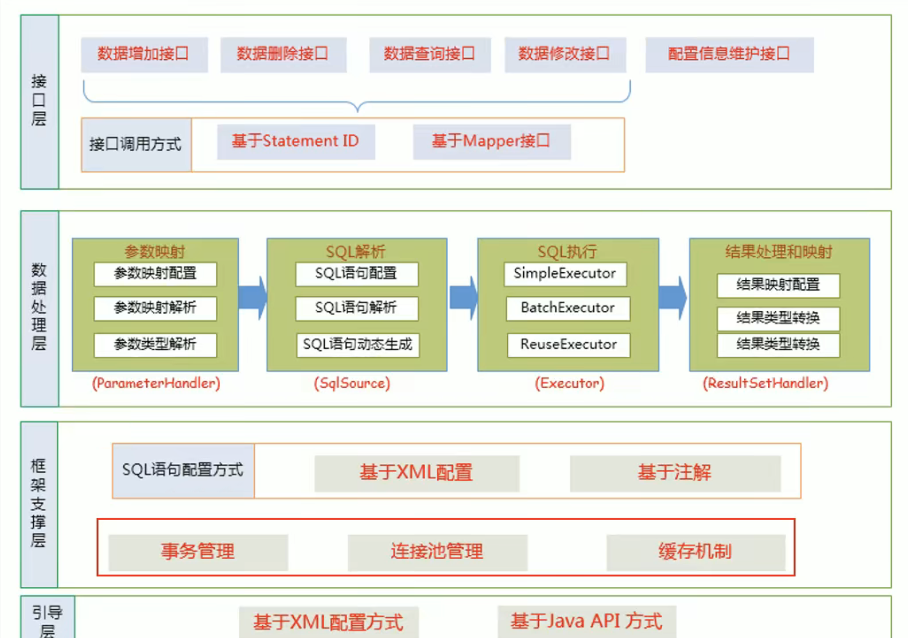

整体结构

整体执行流程 1. 获取SqlSessionFactory 2. 获取SqlSession 3. 获取接口代理对象 MapperProxy 4. 执行SQL
SqlSessionFactory
在springboot使用的代码化配置
@Bean
public SqlSessionFactory sqlSessionFactory() throws Exception {
SqlSessionFactoryBean sqlSessionFactoryBean = new SqlSessionFactoryBean();
sqlSessionFactoryBean.setVfs(SpringBootVFS.class);
// 数据源
sqlSessionFactoryBean.setDataSource(dataSource);
PathMatchingResourcePatternResolver resolver = new PathMatchingResourcePatternResolver();
// SQL配置文件
org.springframework.core.io.Resource[] resources =
resolver.getResources("mapper/*.xml");
sqlSessionFactoryBean.setMapperLocations(resources);
return sqlSessionFactoryBean.getObject();
}
解析sql配置
// builder模式
XMLMapperBuilder xmlMapperBuilder = new XMLMapperBuilder(mapperLocation.getInputStream(),
targetConfiguration, mapperLocation.toString(), targetConfiguration.getSqlFragments());
// 开始解析
xmlMapperBuilder.parse();
// org.apache.ibatis.builder.xml.XMLMapperBuilder#parse
public void parse() {
if (!configuration.isResourceLoaded(resource)) {
// xpath解析mapper节点
configurationElement(parser.evalNode("/mapper"));
configuration.addLoadedResource(resource);
bindMapperForNamespace();
}
parsePendingResultMaps();
parsePendingCacheRefs();
parsePendingStatements();
}
// org.apache.ibatis.builder.xml.XMLMapperBuilder#configurationElement
private void configurationElement(XNode context) {
try {
String namespace = context.getStringAttribute("namespace");
if (namespace == null || namespace.equals("")) {
throw new BuilderException("Mapper's namespace cannot be empty");
}
builderAssistant.setCurrentNamespace(namespace);
cacheRefElement(context.evalNode("cache-ref"));
cacheElement(context.evalNode("cache"));
parameterMapElement(context.evalNodes("/mapper/parameterMap"));
// 构建结果映射
/**
<resultMap id="BaseResultMap" type="com.example.demo.dataobject.UserDO">
<id column="id" jdbcType="INTEGER" property="id" />
<result column="name" jdbcType="VARCHAR" property="name" />
</resultMap>
*/
resultMapElements(context.evalNodes("/mapper/resultMap"));
// 构建sql语句片段映射
/**
<sql id="Base_Column_List">
id, name
</sql>
*/
sqlElement(context.evalNodes("/mapper/sql"));
// 构建sql语句, 构造MappedStatement
/**
<select id="selectByPrimaryKey" parameterType="java.lang.Integer" resultMap="BaseResultMap">
select
<include refid="Base_Column_List" />
from user
where id = #{id,jdbcType=INTEGER}
</select>
*/
buildStatementFromContext(context.evalNodes("select|insert|update|delete"));
} catch (Exception e) {
throw new BuilderException("Error parsing Mapper XML. The XML location is '" + resource + "'. Cause: " + e, e);
}
}
其他有关数据库的问题
-
mysql中数据类型的varchar(3)，3表示字符长度，无论是中文还是英文字符，实验版本mysql5.7 utf-8编码格式
-
使用mybatis过程中，DO的定义可以是基本数据类型吗？如果遇到可空的字段是否会报错？ 经过实验，可以定义为基本数据类型 如果为null，mybatis不会反射调用错将基本数据类型设置为null
//org.apache.ibatis.executor.resultset.DefaultResultSetHandler#applyPropertyMappings
Object value = getPropertyMappingValue(rsw.getResultSet(), metaObject, propertyMapping, lazyLoader, columnPrefix);
// issue #541 make property optional
final String property = propertyMapping.getProperty();
if (property == null) {
continue;
} else if (value == DEFERRED) {
foundValues = true;
continue;
}
if (value != null) {
foundValues = true;
}
// 判断逻辑，如果数据库是null，必须在配置中显式声明null也要set并且不能是原生类型
if (value != null || (configuration.isCallSettersOnNulls() && !metaObject.getSetterType(property).isPrimitive())) {
// gcode issue #377, call setter on nulls (value is not 'found')
metaObject.setValue(property, value);
}
- 使用mybatis进行insert操作，返回值是什么？ 影响的行数 or insert之后的主键？
mybaits调用的原生jdbc方法
org.apache.ibatis.executor.statement.PreparedStatementHandler#update
public int update(Statement statement) throws SQLException {
PreparedStatement ps = (PreparedStatement) statement;
ps.execute();
// 拿到的是更新的行数，原生的jdbc api
int rows = ps.getUpdateCount();
Object parameterObject = boundSql.getParameterObject();
KeyGenerator keyGenerator = mappedStatement.getKeyGenerator();
// 查询后的操作，同样可能使用原生的jdbc api
// java.sql.Statement#getGeneratedKeys
keyGenerator.processAfter(executor, mappedStatement, ps, parameterObject);
return rows;
}
关于返回值的类型，以下代码已经解释的非常清晰了
// org.apache.ibatis.binding.MapperMethod#rowCountResult
private Object rowCountResult(int rowCount) {
final Object result;
if (method.returnsVoid()) {
result = null;
} else if (Integer.class.equals(method.getReturnType()) || Integer.TYPE.equals(method.getReturnType())) {
result = rowCount;
} else if (Long.class.equals(method.getReturnType()) || Long.TYPE.equals(method.getReturnType())) {
result = (long)rowCount;
} else if (Boolean.class.equals(method.getReturnType()) || Boolean.TYPE.equals(method.getReturnType())) {
result = rowCount > 0;
} else {
throw new BindingException("Mapper method '" + command.getName() + "' has an unsupported return type: " + method.getReturnType());
}
return result;
}